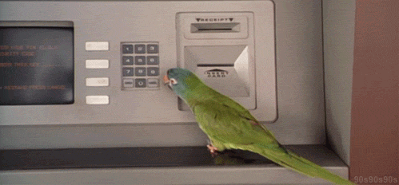

The Farma project was a freelance project, part of an online design contest, focused on developing a brand identity concept for an organic pharmacy in Spain. The objective was to create a memorable and professional brand that reflects the values of natural and cruelty-free products, including skincare and vitamins.
Freelance
Farma Brand Identity
Branding
—For the Farma brand identity project, I designed a comprehensive brand identity using Adobe Photoshop and Illustrator, which included a new brand mark, visual identity, and packaging. The design focused on creating a professional and memorable image that reflected Farma’s commitment to organic and eco-friendly products. The visual identity was crafted to communicate the brand’s values effectively while ensuring consistency across all branding materials.
Although it was not chosen as the final design, the client appreciated the clean and professional look that aligned with the brand’s values, and I secured third place in the online contest. This project was valuable, and future improvements should focus on incorporating digital strategies to further strengthen the brand’s identity.
—The illustrations played a crucial role in adding emotional depth and enhancing the narrative. This project showcased the power of visual storytelling and underscored the importance of aligning illustrations with the narrative’s emotional tone. Future projects could benefit from exploring various illustration styles and techniques to further enrich the storytelling experience.